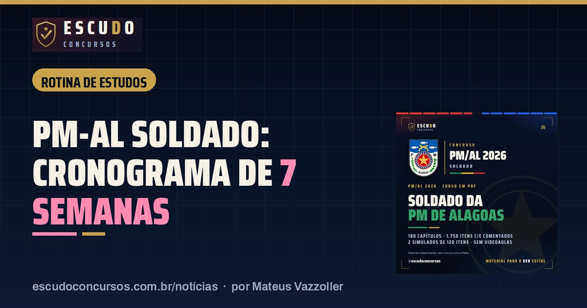

Cronograma de estudos PM-AL Soldado: 7 semanas até a prova do Cebraspe de 17/01/2027
Rotina de estudosPublicado em 28 de novembro de 2026 · por Mateus Vazzoller, ESCUDO Concursos

Quem vai disputar uma das 1.000 vagas de Soldado da Polícia Militar de Alagoas e quer entrar no CFAP como Soldado-Aluno tem 7 semanas cheias, de segunda, 30/11, até o domingo da prova, 17/01/2027, quando o Cebraspe aplica à tarde, no mesmo turno, as objetivas e a discursiva. Este plano reparte 15 horas por semana, começa pela legislação do policial militar de Alagoas, que pesa na P2 e quase ninguém traz de outro concurso, põe um texto de Atualidades por semana e guarda a última semana só para revisão. Sábado e domingo, 28/11 e 29/11, servem de largada.
| Cargo | Soldado do Quadro de Praças da Polícia Militar de Alagoas, 1.000 vagas (500 imediatas) |
|---|---|
| Prova | 17/01/2027 (domingo), à tarde, objetivas e discursiva no mesmo turno, 4 horas e 30 minutos |
| Tempo até a prova | 7 semanas, de 30/11/2026 a 17/01/2027, mais a largada de 28/11 a 29/11 |
| Carga sugerida | 15 horas por semana |
| Itens | 50 de conhecimentos básicos (P1) e 70 de específicos (P2), certo ou errado, mais 1 texto de Atualidades |
| Mínimos | 10 pontos na P1, 21 na P2 e 36 no total, já descontados os erros |
Curso ESCUDO Soldado da PM de Alagoas em PDF: 180 capítulos e 1.750 itens certo ou errado comentados, 2 simulados de 120 itens com discursiva, de acordo com o edital. R$ 47.
Ver o curso
Largada: o que fazer até domingo, 29/11?
- Confira a situação da inscrição. A relação final de quem concorre às vagas de pessoas com deficiência e das lactantes com atendimento especializado saiu em 24/11/2026 na página do concurso no Cebraspe. Não há outra publicação prevista até o edital dos locais de prova, em 30/12/2026.
- Separe o texto das leis de Alagoas. O Estatuto dos Policiais Militares (Lei Estadual 5.346/1992) e o Regulamento Disciplinar (Decreto Estadual 37.042/1996), na redação de março de 2026, porque o edital considera a legislação vigente na data da primeira publicação.
- Monte a agenda. Duas horas nos dias úteis e cinco no fim de semana fecham as 15 horas. Reserve o domingo à tarde para o bloco mais pesado, que é o horário da prova.
Por que treinar o certo ou errado desde a primeira semana?
No Cebraspe, sem alteração de gabarito, cada acerto vale +1, cada erro vale -1 e o item em branco vale 0. Os mínimos são líquidos: 10 pontos na P1, 21 na P2 e 36 no total. Quem chuta tudo pode marcar muitos acertos e ainda ficar abaixo do corte. Por isso o plano tem itens de certo ou errado em toda semana, não só no fim: a meta é aprender quando deixar em branco. Uma regra prática é marcar só o item em que você consegue dizer por que ele está certo ou errado.
Além dos mínimos, só seguem os 1.500 primeiros da ampla concorrência, 100 PcD e 400 PPIQ, e só esses têm a discursiva corrigida.
Como dividir 15 horas por semana?
O edital não diz quantos itens cada disciplina terá dentro da P1 e da P2. A divisão abaixo segue o tamanho do programa e o peso de cada prova.
| Bloco | Prova | Horas por semana |
|---|---|---|
| Legislação do policial militar de Alagoas (Estatuto, Regulamento Disciplinar e Lei 14.751/2023) | P2 | 2h30 |
| Código Penal (Parte Geral) e leis penais especiais | P2 | 3h |
| Direito Constitucional e Direito Administrativo | P2 | 2h |
| Processo Penal, Penal Militar e Processo Penal Militar | P2 | 1h30 |
| Direitos Humanos | P2 | 30 min |
| Língua Portuguesa | P1 | 2h |
| Matemática | P1 | 1h |
| Noções de Informática | P1 | 45 min |
| Conhecimentos do Estado de Alagoas | P1 | 45 min |
| Discursiva de Atualidades (1 texto) | P3 | 1h |
| Total | 15h |
A P2 fica com quase dois terços do tempo porque tem 70 dos 120 itens, o corte mais alto e é o primeiro critério de desempate depois da idade.
Semana a semana até a prova
A primeira coluna é o que só o policial militar de Alagoas estuda. A segunda anda com o Direito. A terceira é a P1 e a discursiva.
| Semana | Período | Bloco PM-AL | Bloco jurídico | P1 e discursiva |
|---|---|---|---|---|
| 1 | 30/11 a 06/12 | Estatuto dos PMs de Alagoas: ingresso, hierarquia, deveres e direitos | Código Penal: aplicação da lei penal, crime, ilicitude e culpabilidade | Português: interpretação e tipos textuais. Alagoas: formação histórica e Quilombo dos Palmares. Texto 1 |
| 2 | 07/12 a 13/12 | Regulamento Disciplinar: transgressões, punições e recursos | Constitucional: direitos e garantias fundamentais | Português: coesão e pontuação. Matemática: proporção e regra de três. Texto 2 |
| 3 | 14/12 a 20/12 | Lei Orgânica Nacional das PMs (Lei 14.751/2023) e revisão do Estatuto | Leis especiais: drogas, Estatuto do Desarmamento, Maria da Penha e abuso de autoridade | Informática: Windows, Office e segurança. Alagoas: geografia e economia. Texto 3 |
| 4 | 21/12 a 27/12 | Revisão do Regulamento Disciplinar só por itens. Semana do Natal: manter ao menos os itens | Administrativo: princípios, poderes, atos e responsabilidade do Estado | Matemática: porcentagem e juros. Texto 4 |
| 5 | 28/12 a 03/01 | Penal Militar e Processo Penal Militar: crimes militares, IPM, flagrante e deserção | Leis especiais: hediondos, tortura, organização criminosa, racismo, ECA e Código de Trânsito. Processo Penal: inquérito e ação | Português: concordância, regência e crase. Alagoas: organização político-administrativa e cultura. Conferir o edital dos locais (30/12). Texto 5 |
| 6 | 04/01 a 10/01 | Simulado completo no domingo, 10/01, à tarde, com 4 horas e 30 minutos | Direitos Humanos e Pacto de São José. Constitucional: defesa do Estado e das instituições | Revisão dos erros do simulado. Texto 6, dentro do tempo do simulado |
| 7 | 11/01 a 17/01 | Revisão leve da legislação de Alagoas | Revisão só por itens | Descanso no sábado, 16/01; prova no domingo, 17/01, à tarde |
Até a semana 5, metade do tempo é teoria e metade é item de certo ou errado. Da semana 6 em diante não entra conteúdo novo.
Como treinar a discursiva de Atualidades?
A P3 é um texto dissertativo de até 30 linhas, vale 30 pontos e só é corrigida para quem fica entre os aprovados nas objetivas. A nota cai com os erros de escrita, porque o edital desconta 6 vezes o número de erros dividido pelo número de linhas. Um texto por semana basta, desde que você o corrija procurando erros de acentuação, concordância e pontuação. Escolha temas de segurança pública, direitos humanos e da realidade de Alagoas, que conversam com o cargo. Para aprovar, a nota precisa chegar a 15.
Como fazer o simulado da semana 6?
Faça P1, P2 e o texto de uma vez, no domingo à tarde, em 4 horas e 30 minutos, que é o tempo total da prova. Corrija descontando um ponto por erro e compare com os três mínimos: 10 na P1, 21 na P2 e 36 no total. Conte também quantos itens você deixou em branco: se foi mais da metade de uma disciplina, ela é a revisão da semana 7. Separe ao menos 30 minutos do tempo para passar o texto a limpo.
E o teste físico?
O TAF vem depois da discursiva, com data em edital próprio, e tem cinco provas: abdominal, barra fixa (homens) ou isometria (mulheres), corrida de ir e vir, corrida de 2.000 m (homens) ou 1.800 m (mulheres) e natação de 50 m, que reprova quem deixa para depois. Começar agora, três vezes por semana e em carga leve, evita correr contra o tempo depois do resultado de 19/02/2027. Os índices de cada prova estão no guia do concurso PM-AL.
Quem quer os 180 capítulos na ordem do programa e os itens de certo ou errado comentados encontra o curso ESCUDO Soldado PM/AL 2026 em PDF.
Curso ESCUDO Soldado da PM de Alagoas em PDF: 180 capítulos e 1.750 itens certo ou errado comentados, 2 simulados de 120 itens com discursiva, de acordo com o edital. R$ 47.
Ver o curso
Perguntas frequentes
Quando é a prova da PM-AL para Soldado?
Em 17/01/2027, um domingo, à tarde, com objetivas e discursiva no mesmo turno e 4 horas e 30 minutos no total. O edital com a consulta aos locais de prova está previsto para 30/12/2026.
Vale a pena deixar item em branco na prova do Cebraspe?
Vale quando você não tem certeza, porque cada erro anula um acerto e o branco vale zero. Os mínimos de 10 na P1, 21 na P2 e 36 no total são contados depois do desconto dos erros.
Quantas horas por semana preciso estudar até 17/01?
Este plano usa 15 horas por semana em 7 semanas, com quase dois terços na P2 e um texto de Atualidades por semana. Com menos tempo, mantenha a legislação de Alagoas e os itens de certo ou errado e encurte a teoria.
Leia também
- Rotina de estudosCronograma de estudos GCM Salvador: 7 semanas até a prova da FGV de 17/01/2027
27 de novembro de 2026 · Plano de 7 semanas para a prova da FGV de 17/01/2027 para Guarda Civil Municipal de Salvador: 14 horas por semana, legislação de Salvador primeiro e corte por módulo.
- Rotina de estudosCronograma de estudos PC-PE Agente: 14 semanas até a prova de 07/03/2027
26 de novembro de 2026 · Plano de 14 semanas até a prova do Cebraspe de 07/03/2027 para Agente da PC-PE: 15 horas por semana, Contabilidade cedo e redação toda semana.
- Rotina de estudosCronograma de estudos Policial Penal PE: 16 semanas até a prova de 21/03/2027
25 de novembro de 2026 · Plano de 16 semanas para a prova do Cebraspe de 21/03/2027 para Policial Penal de Pernambuco: 15 horas por semana, Execução Penal primeiro e discursiva semanal.
Guia completo do concurso: edital, vagas e o que cai · Mais notícias e dicas de concursos